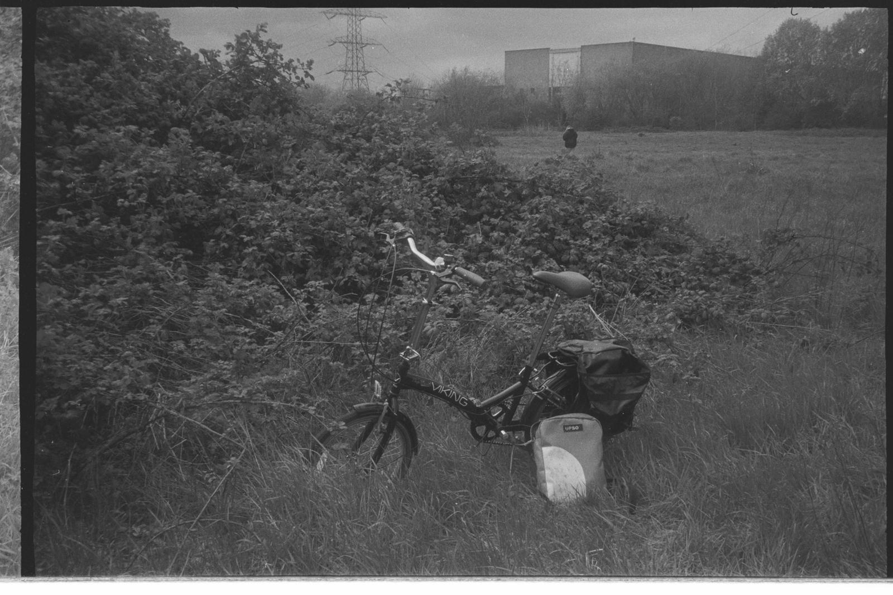
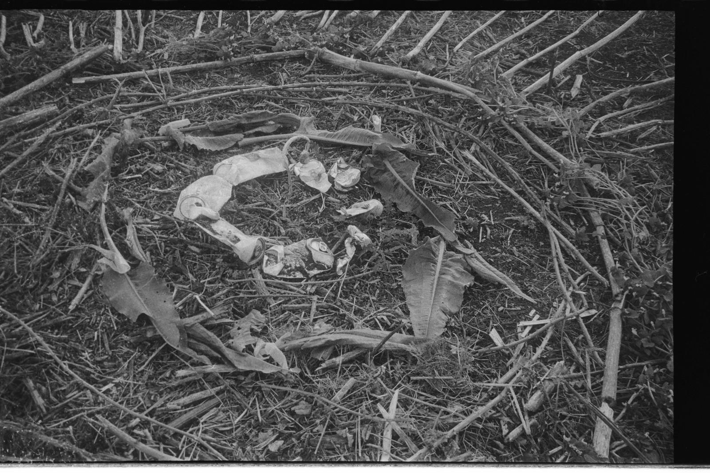
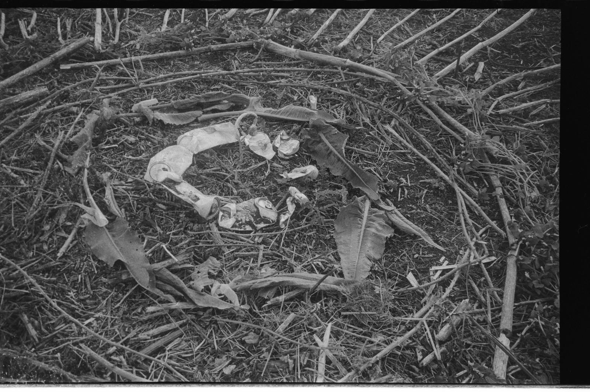
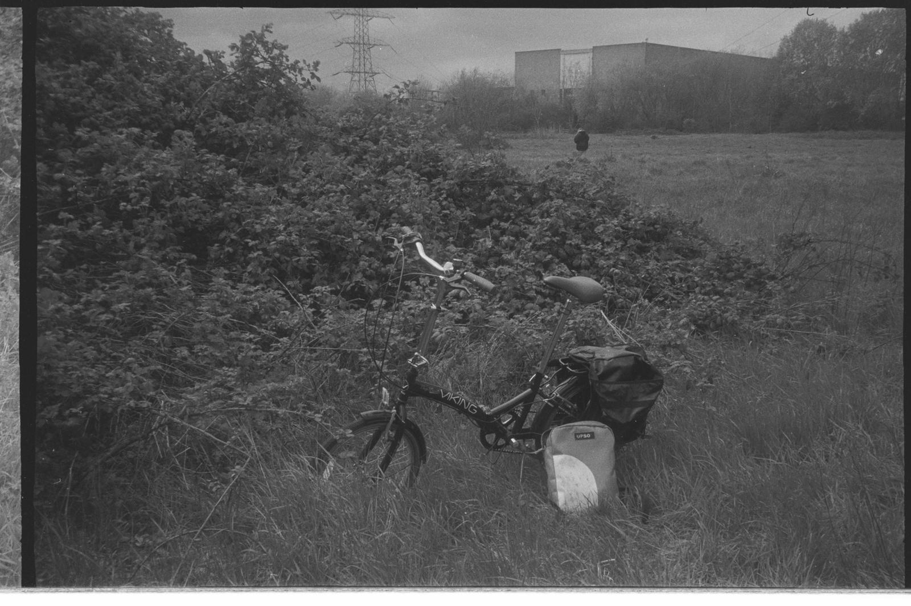
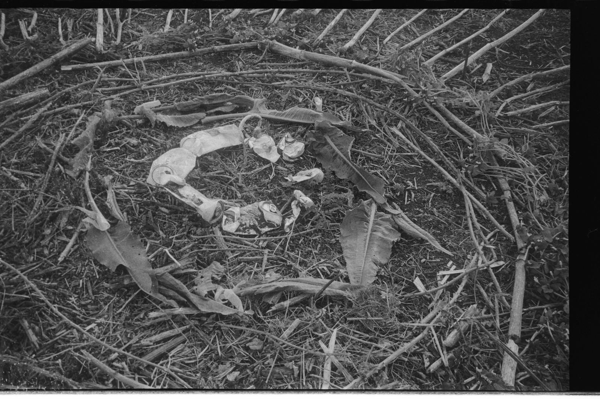

Public Bodies, Residency with AiR Studios
'Public Bodies' was a week long residency on the Wild Marsh with AiR Studios.

 

'Public Bodies' was a week long residency on the Wild Marsh with AiR Studios.

